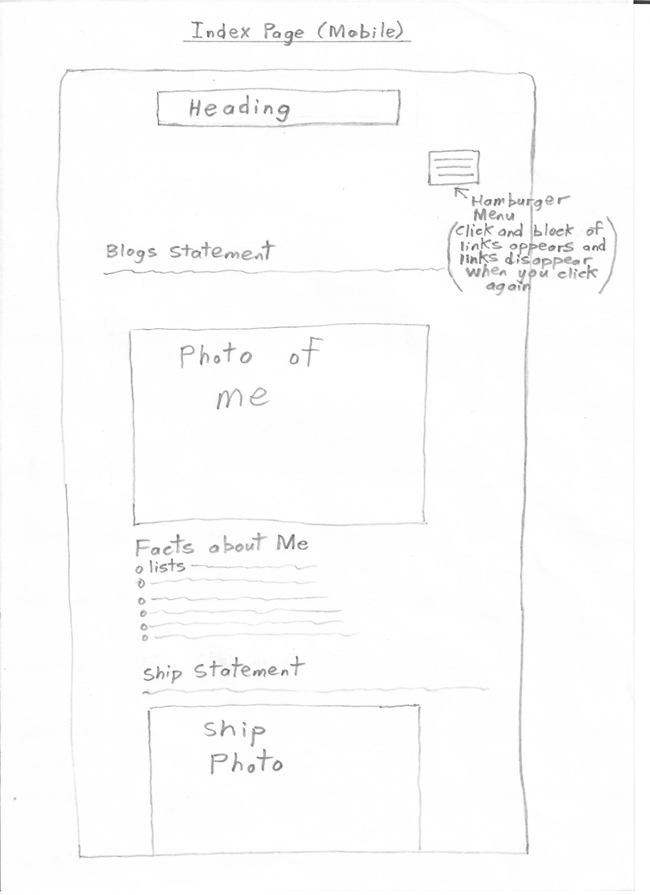
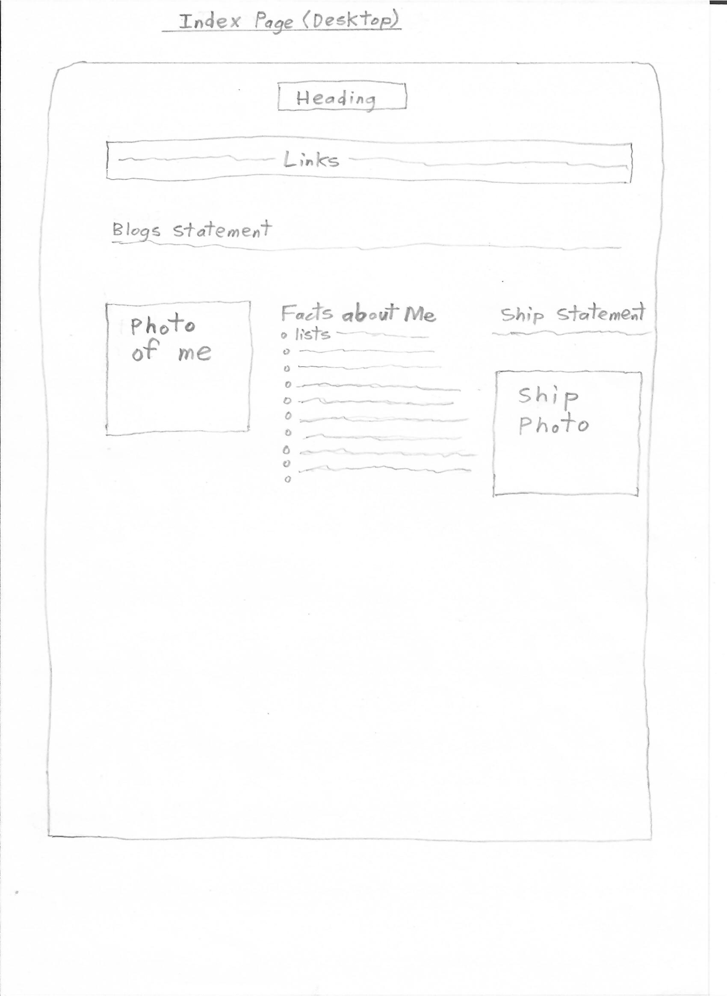
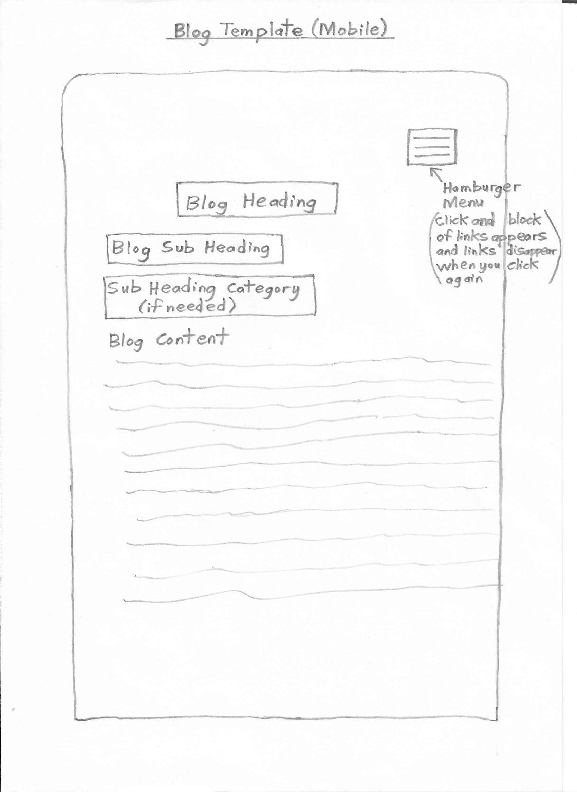
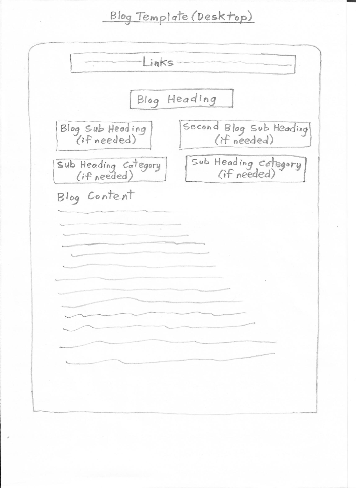

A responsive site is one that works on different sized devices like mobile phones, desktop computers or laptops. Responsiveness is important because lots of users these days are wanting to access the internet when they are on the go, so they will be using their mobile phones. As a result of this websites have to be designed to accomodate for these different sized smaller devices other than a desktop computer.
Mobile first design is designing a website for a mobile in mind first and then working the way up from there in terms of responsive design. You have to design for content fitting on to a smaller screen first and then work the way up to a larger desktop screen. Mobile first design is important because a lot of people are accessing the web through mobile phones these days, so having the convenience of being able to access internet on their mobile makes them happy. Having consistency over different sized mobiles is also another important aspect in this design.
Frameworks are a package that has a set of standards and is designed to make problems easier. In terms of web development it is there to help coders code easier. The pros of a framework are that it speeds up the development process from the beginning, produces clean and tidy code and has good compatability across a range of browsers. Frameworks, also make you learn good practices and help maintain a website a lot easier, as there is one process to fix problems. The cons of a framework are that you don't learn to do it yourself, it mixes content and presentation, has unused code leftover and it takes longer to learn because of understanding what the code does.
A wireframe is a sketched drawing of how we want our content layout arranged for a web page. We use a wireframe because it gives us a starting point and an idea of how we want our web page layout to look.
Collapsed Grid Mobile Index Page
12x12 Grid Desktop Index Page
Collapsed Grid Mobile Blog Template Page
12x12 Grid Desktop Blog Template Page
Initially I found the containment of the ship image difficult to implement, because of the initial size of this image and the space to work with. Although the links were easy to implement they were very difficult to contain and are not behaving very well in terms of height, but with Javascript hopefully this problem can be fixed. The lists were easy to implement, but proved a challenge in terms of styling for the questions and answer and getting them aligned properly. I had to think of different classes to make this function correctly. The biggest challenge in terms of implementation was working out how to have control over the columns. This is because it has very difficult to find good examples of how this can be achieved on the internet. However for now, it looks like the columns are working OK at the desktop and mobile levels, but it is still a work in progress with sizes in between, as I haven't got control over this yet.